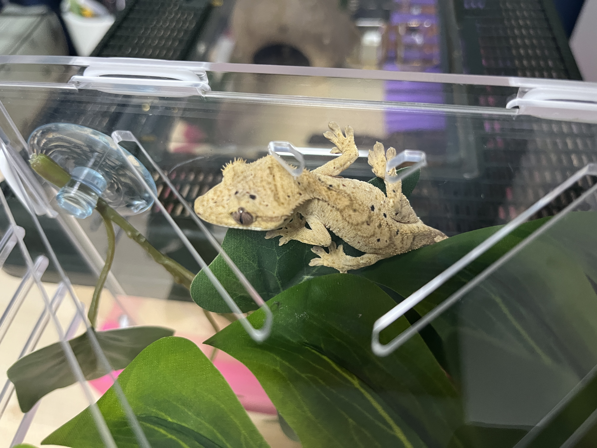

볏도마뱀붙이(Correlophus ciliatus)는 크레스티드 게코(crested gecko)라고 불리며, 뉴칼레도니아 남부에 자생하는 도마뱀붙이의 한 종이다. 대한민국 사육 업계(한국의 파충류 시장)에서는 줄여서 크레라고 불린다. 크레스티드게코는 1866년에 프랑스 동물학자 알폰스 귀슈누(en:Alphone Guichenot)가 발견했으며, 학명 또한 이 사람이 지었다.[1] 크레스티드게코는 로버트 십(Robert Seipp)이 지휘한 탐사 도중에 다시 발견되기 전까지 멸종된 것으로 알려져 있었다.[2][3] CITES에 따라 보호종으로 분류되며, 애완동물로 인기가 있어서 많이 거래된다. 현재까지도 야생개체는 극소수이나 사육되는 개체의 수는 레오파드 게코와 함께 매우 많은 편에 속한다. 또 크레스티드게코는 레오파드게코와 함께 키우기 쉬운 종이다. 크레스티드게코는 슈퍼푸드라는 인공사료를 먹어 곤충을 혐오하는 사람에게 좋다. 그렇지만 이 슈퍼푸드를 먹지않을 수 있다.그럼 생먹이를 줘야한다
